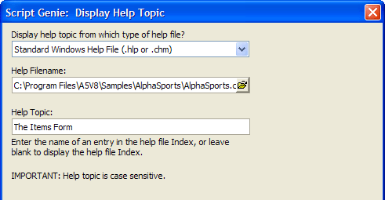
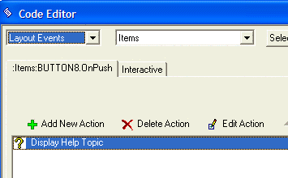
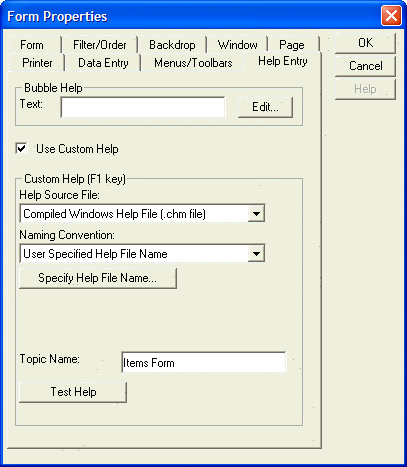
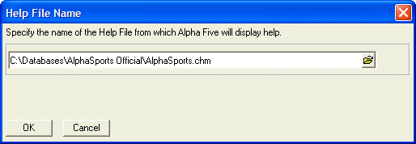

Linking to a External Help File Topic
There are two different ways the user can retrieve a help topic in a compiled HTML help file (.CHM format) or Windows help file (.HLP format).
By running an Action Script, typically as the result of a button push.
By pressing F1 when the cursor is over a button, type-in, list box, or combo box control.
Procedure: Linking to an External Help File Topic with an ActionScript
Sketch a button onto your form.
Enter the button's name in the Label field.
Click the Use Action Scripting option button.
Click Launch Script Editor.
Click Add New Action.
Select "Miscellaneous" in the Category list.
Select "Display Help Topic" in the Action list and click OK.
Enter the help file in the Help Filename field.
Enter the help topic name in the Help Topic field.
 Note : The help topic
name must exactly match an entry in the help file's index.
Note : The help topic
name must exactly match an entry in the help file's index.

Click Next > and OK.

Click Close(X) and Save All.
Procedure: Linking a Form or Control to an External Help File Topic
Right click the form or control and click Properties....
Click the Help Entry tab.
Check Use Custom Help.
Select the type of help file in the Help Source File list.
Select "User Specified Help File Name" in the Naming Convention list.

Click Specify Help File Name... and select the target help file.

Enter the name of the topic in the Topic Name field.
 Note : The help topic
name must exactly match an entry in the help file's index.
Note : The help topic
name must exactly match an entry in the help file's index.